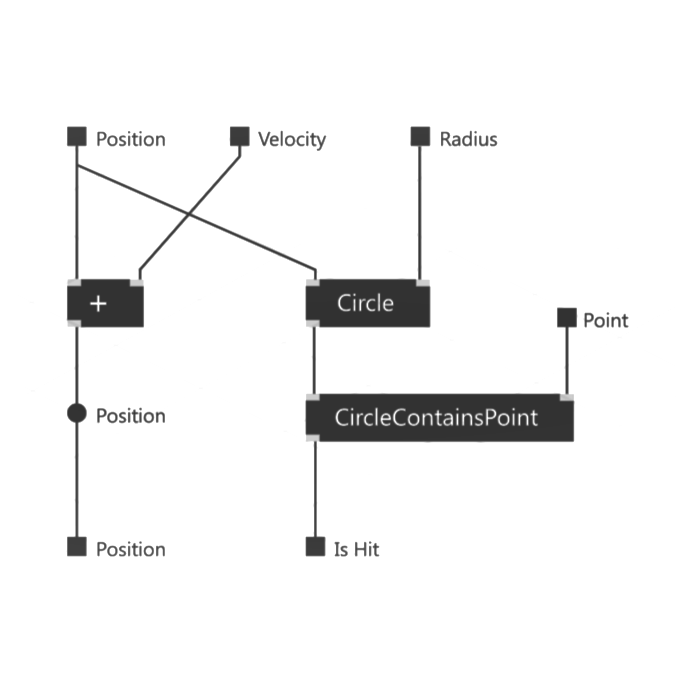
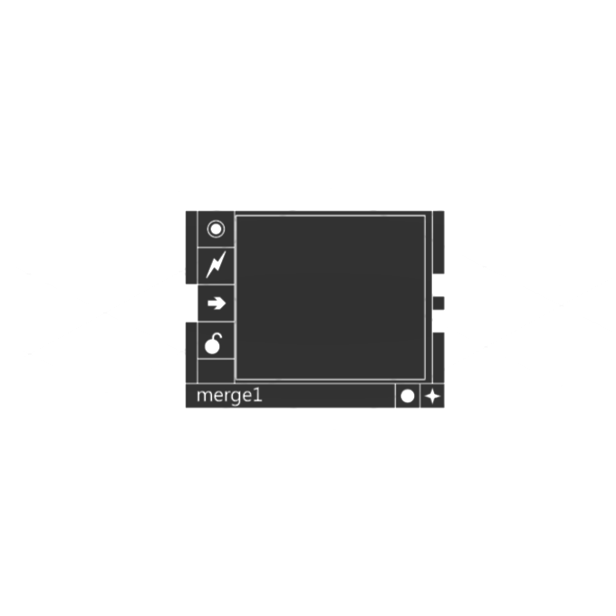
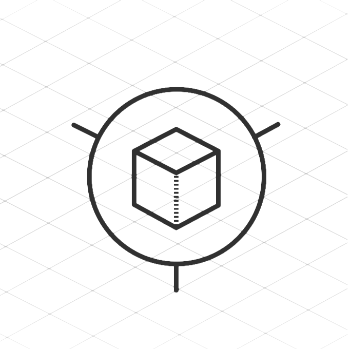
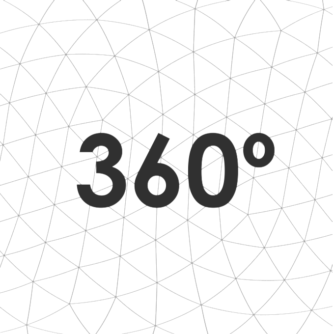
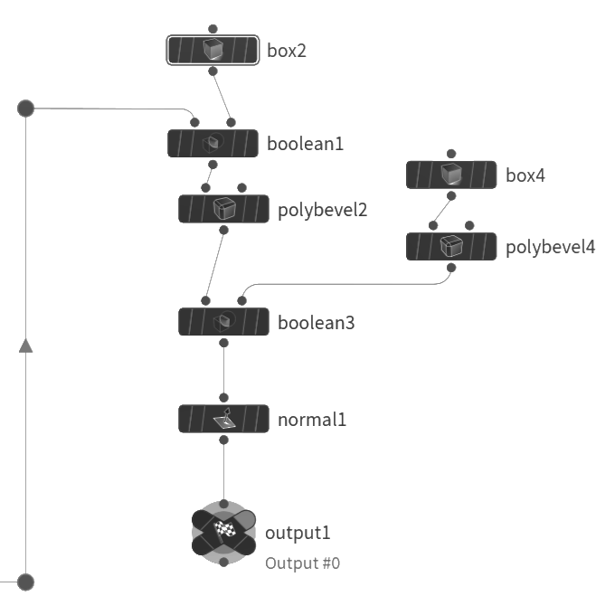

Programación visual para artistas III. vvvv

Por último, en ésta serie hablaremos de vvvv, un software de creación de contenido audiovisual mediante nodos, tal y como trabajamos en Max y Touchdesigner. Cuando utilizamos la programación a través de objetos como
nodos vvvv lo define como “patching”: uniendo diferentes nodos mediante sus entradas y salidas creamos una pieza de código ejecutable.
software
shot II
Serie de videos proyectados en el FMX 2017 sobre Houdini: Motion Graphics, Generative Art… muy interesantes! .
enlace: FMX 2017 Presentations Sidefx
shot
Programación visual para artistas II. TouchDesigner

Si el mes pasado hablábamos de Max/msp, del que a parte de su módulo Jitter para generación de vídeo en tiempo real destacábamos las herramientas de audio, hoy hablamos de Derivative TouchDesigner, un software que se centra más en la parte de la imagen, manipulación de objetos 3D y con herramientas para la
creación de interfaces más sólidas, sin dejar atrás las características de entrada y salida analógica y digital y procesamiento de datos desde prácticamente cualquier fuente.
software
Programación visual para artistas I. Max/Msp
Para la realización de audiovisuales interactivos, hablando de instalaciones, presentaciones multimedia creativa o eventos en directo, los que somos más de la rama visual nos encontramos con el problema de encontrar una plataforma que nos permita realizar éste tipo de proyectos sin volvernos locos con el aprendizaje de un lenguaje de programación o la realización de aplicaciones complejas que ofrezcan la parte de interactividad junto a la creatividad y contenido audiovisual.
software
shot I
El cantautor de moda de Marvel, Jim Croce: I got a name.
enlace: spotify
shot
El descuento para retornados con Iberia
!Ey! ya tengo todos mis papeles, regreso a España y desde la Consejería de Trabajo y Seguridad Social del consulado de España en México me ofrece una estupenda oferta: un descuento del 60% en el viaje de ida en Iberia… :/
Es una buena oferta, seguro. Sólo tengo que entregar el libro de familia, el acta de matrimonio, la copia del pasaporte, la baja consular y la baja en hacienda, entregarlo en la susodicha consejería en persona (8 horas de viaje, 800 pesos sólo en el autobús y un día perdido) y al momento me darán la carta que.. tengo que entregar en persona el día del pago de los billetes en las oficinas de Iberia en México en el aeropuerto.
personal
Video creación para redes sociales
Cada vez vemos más videos en las redes sociales; algunos sustituyen a la típica imagen con alguna frase, y ahora crean relatos a través de la imagen en movimiento con texto superpuesto.
En otras ocasiones se utilizan para vender un producto u ofrecer servicios mediante animaciones sencillas de objetos o personajes. Otros permiten seleccionar el texto que parece ir escribiéndose en la pantalla, o directamente te permite la creación de gifs a partir de tu colección de imágenes del smartphone.
profesional
Escenas 3D en la web

Si el último post lo dedicamos a las posibilidades de los vídeos 360º para su reproducción el web, ya sea Facebook o Youtube, hoy vamos a hablar de algunas posibilidades que tenemos de mostrar escenas 3D.
Tenemos bastantes alternativas, dependiendo de lo que queramos y nuestros conocimientos; lo más sencillo sería utlizar servicios como Sketchfab, Blend4web y Marmoset Viewer. Estas aplicaciones nos permiten añadir un modelo 3d con sus texturas, iluminación y efectos para crear escenas simples sobre todo tipo turntables, es decir, poder girar la camara alrededor de la escena 3d para verla desde cualquier ángulo.
profesional
3D en videos 360

Para ampliar los servicios a ofrecer a los clientes, he estado estudiando las diferentes maneras de presentar el material 3D de manera interactiva en la web.
Lo primero y más sencillo a realizar son los videos 360º, que pueden reproducirse en Youtube o en Facebook, pero, ¿ qué tipo de producto puedes realizar? para escenas 3D podríamos recrear lugares para visitas virtuales, presentaciones arquitectónicas para el sector inmobiliario, y animaciones que pudieran utilizar la libertad de visión para crear narrativas múltiples, por ejemplo.
profesional
SEW el resumen
Como os comenté la semana pasada estuvimos en el Startup Europe Weekeend en Valladolid. El martes tuvimos una charla de la Agencia de Desarrollo muy útil, en la que compartieron el tipo de ayuda que nos ofrecen.
Entre ellas el curso CREA, un curso de 30h en la que te ayudan a desarrollar un plan de empresa, las becas de 1500 eur para aquellos que vayan a formar una empresa, la Lanzadera de Empleo, ayudas reintegrables o el CreaNetwork.
profesional
Houdini 16 Amarok

Hooooy se presentó la nueva versión de Houdini. Dentro de las novedades, como los nuevos iconos y herramientas de ayuda en el panel de nodos, y el menú contextual, que va a facilitar sobre todo el trabajo de modelado, tenemos una nueva herramienta de booleanas. Tal vez las nuevas herramientas de creación de esqueletos y rigs son los que más necesitaba en mi flujo de trabajo para poder tener en Houdini una herramienta para “todo”, no tan sólo específica para efectos y animaciones procedurales.
software
Startup Europe Week
Esta semana es el Startup Europe Weekend, y dentro de las ciudades que organizan el evento está Valladolid. Durante éstos tres días, habrá charlas y presentaciones, tanto de empresas locales que nos contarán sus experiencias, como organismos oficiales como la Cámara de Comercio con una charla sobre la búsqueda de financiación. Si te pasas nos veremos.
profesional
Aterrizando
Hop! ya estoy aquí. Valladolid, ciudad castellana y por estas fechas helada. Me recibes a bajo cero y un poco de lluvia, pero te lo perdono.
A parte del cambio horario que me hace desear dormir a las siete de la tarde y no querer despertarme hasta las doce del mediodía, todo ha ido bien, muy bien.
Iniciar una nueva vida en otro lugar aunque sea el tuyo, requiere de los trámites que imaginamos: seguridad social, hacienda, empadronamiento, certificados.. y visitas a extranjería para solicitar el certificado de emigrante, la Agencia De Innovación para becas, subenciones, la Cámara de Comercio, etc..
personal
Querétaro - Valladolid
Un año más viajo a la madre patria. Esta vez en cambio, es especial: con este viaje inicio mi mudanza definitiva; dejo México para volver a España.
Han sido 7 años que fueron lo que necesitaba en muchos aspectos; de sentirme bloqueado a nivel personal y profesional, para encontrarme con nuevas formas de ver la vida y sus oportunidades.
Pero ey, antes de contarte mi vida, siguamos con el tema que nos trae hoy: ¿ cuanto se tarda en hacer el viaje de Querétaro a Valladolid?
personal
Presentaciones congeladas
Hace unos días tuvimos una presentación para una serie de vídeos animados educativos en un colegio, así que me puse manos a la obra: primero la búsqueda de referencias y empaparse un poco de lo que se hace ahora, tanto para vídeos educativos para la BBC como infantiles en canales tipo Cartoon Networks.
Siendo un producto para un colegio, hay que ser conservador, con personajes “normales”, nada de pulpos habladores, vampiros y otra fauna. No es fácil dar forma a la idea de una serie, aunque sea uno educativo con dos o tres personajes, y decorados actuales representados en el presente. A medida que creas ése mundo se enriquece, y empiezas a formar parte de él, imaginándote cómo son los personajes, como actuan, dónde, cual es su psicología…
personal
Desmontando la T7500
Mi querido equipo, tantos años juntos, no podía dejar la Dell T7500 en México. Así que me propongo traerla en avión.
El primer problema es el peso: 28Kg, que inevitablemente en Iberia me costaría el pago de una maleta extra con exceso de peso, es decir: entre 150 y 200 euros. Ok, vamos adesmontarla, y la llevaré en dos maletas.
El proceso de desmontaje es sencillo, realmente. Primero la tapa del procesador, discos duros y sus horquillas, tarjeta gráfica, ventiladores delanteros, de los discos, fuente de alimentación, dvd.
personal
Por el consulado
Me muevo a España! pero antes hay que hacer bastante papeleo, entre ellos darse de baja en algunos servicios y de alta en otros. Entre ellos el certificado de matrimonio y el certificado de emigrante.
Nadie sabe como conseguir pro aquí el certificado de emigrante, y para el primero necesito un certificado (otro) de nacimiento de menos de seis meses; prentendo conseguirlo mediante el.. certificado! digital.
Pero nadie sabe (consulado honorario de Querétaro) sabe que es necesario rellenar una solicitud junto al código que te entrega el FNMT.
personal
Acting for Animators
Actualmente me encuentro leyendo éste libro del escritor Ed Hooks, aprovechando que estoy realizando una propuesta sobre una serie de animación educativa.
Se puede encontrar ahora a muy buen precio en Amazon como descarga digital para Kindle. En cambio y por expreso deseo del autor ya no se imprime en papel desde hace un tiempo y por lo tanto su precio es más elevado.
Lo primero que demeos de saber es que no estamos frente a un libro que nos enseñe cómo animar o recrear diferentes posiciones a nuestros personajes digitales.
Nos muestra en cambio, y mediante un lenguaje muy sencillo de entender a través de ejemplos, cómo “piensa” nuestro personaje, plantear las escenas desde un punto de vista “teatral”, a través de Los siete principios esenciales de la actuación.
libros
Redshift GPU render
Entonces te das cuenta de que tu CPU se ha hecho viejita, y que el nivel de render que deseas con esos nuevos algoritmos de iluminación global super-realistas se alejan de tí proporcionalmente a las horas de procesamiento de cada frame.
Piensas, ok, renderfarms! pero no todos los clientes te van a pagar por el servicio. Si es verdad que seguiran siendo indispensables para algunos trabajos, sobre todo en renders de Mantra de Houdini, que es CPU y siempre lo será.
software
Unos meses atrás
Uf, hace tiempo que no escribía por aquí.
Nunca pensé que mi faceta de blogger fuera a proporcionar abundante-actualizada información de lo que sucede en el estudio, aunque tengo que reconocer que cuatro meses son demasiados, así que vamos a ponernos al día.
personal